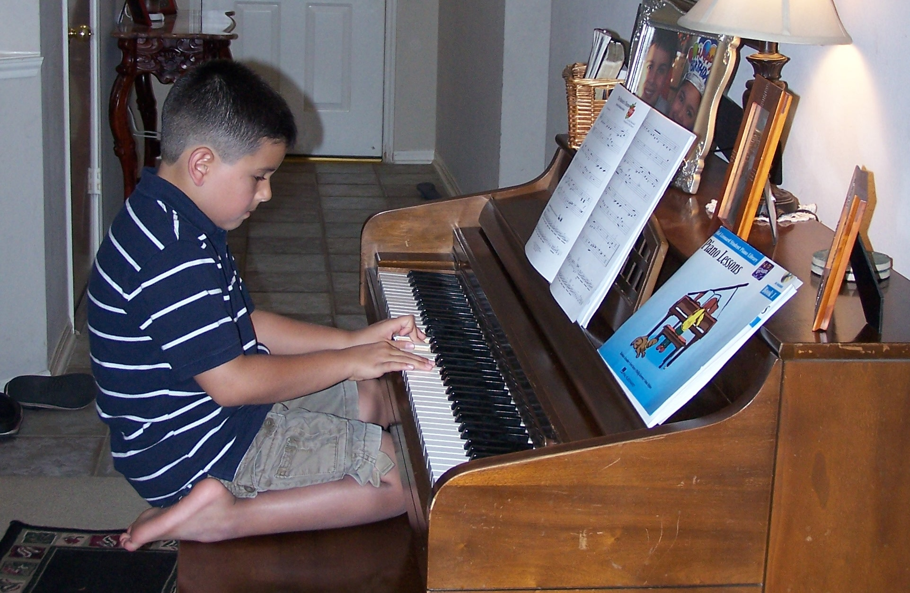
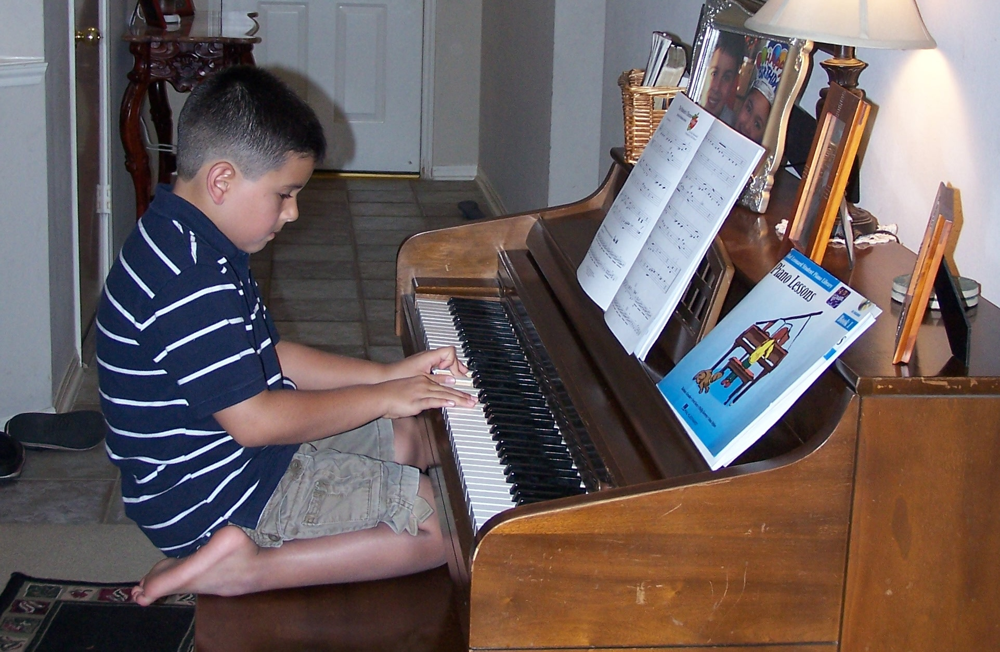

Longhorn Band & Music
Music has been a core part of my life for as long as I can remember. I started piano
at 6 years old and grew into a multi-instrumentalist on horn, trumpet, percussion,
and keyboard. Over the past 16 years I have performed in concert bands, jazz
groups, marching band, and indoor percussion with audiences ranging from a single
person to more than 100,000.
I have spent 9 years in marching band, 12 years in band programs overall,
and 5 seasons with the University of Texas Longhorn Band, performing across the country
and learning how to execute under pressure with a large team. I am also a composer,
arranger, and teacher and I hope to one day run my own piano studio. Music is my
passion and continues to shape how I collaborate, lead, and create.
 
